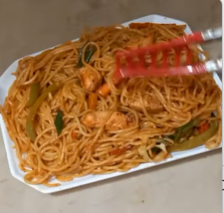

-

Chicken spaghetti
Ingredients Chicken Ingredient 2 Ingredients3
Recipe Step 1 we will melt the ghee in a large frying pan. step 2 Add the chopped garlic and the chopped (and seedless) chili when it’s hot. Step 3Fry gently for 2 minutes, then add the cumin and paprika, season with salt and pepper, and cook for about 40 seconds.
View more Recipes -

Chicken Tikka masala
Ingredients salt and pepper 2 teaspoons of cumin 2 teaspoons of paprika 1 small chili pepper 40 grams of ghee, clarified butter 2 cloves of garlic
Recipe Step 1 we will melt the ghee in a large frying pan. Step 2 Add the chopped garlic and the chopped (and seedless) chili when it’s hot. Step 3 Fry gently for 2 minutes, then add the cumin and paprika, season with salt and pepper, and cook for about 40 seconds.
View more Recipes -

Goat Arosto
Ingredients Goat Dhania Ginger Garic
Recipe Step 1 Chop the goat meat chunks and season with salt let it rest for 20 minutes at room temperature Step 2 In a large bowl,put paprika,black pepper garam masala and little cooking oil until they're completely mixed Step 3 Add the chopped goat meat into the mixed spices bowl and let it rest for 20 minutes again
View more Recipes